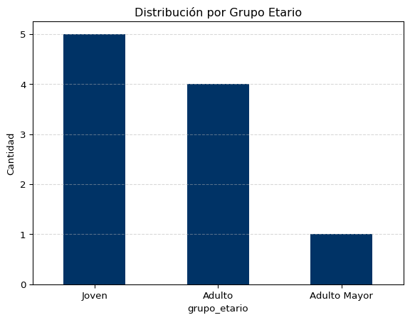

Entender la diferencia entre variable continua y discreta.
Utilizar pd.cut() para crear rangos de edad.
Analizar la distribución de los nuevos grupos generados.
1. El Escenario: Edades de los Encuestados
Seguimos con nuestro proyecto “Muleto”. Esta vez nos enfocaremos exclusivamente en la columna Edad. A veces el número exacto no importa tanto como el “Grupo Etario” al que pertenece la persona.
Definimos los “bordes” (bins) y las “etiquetas” (labels).
Código
# 1. Definimos los cortes: 0-30, 30-60, 60-100cortes = [0, 30, 60, 100]# 2. Definimos los nombres de los gruposnombres = ['Joven', 'Adulto', 'Adulto Mayor']# 3. Aplicamos la magia de pd.cutdf['grupo_etario'] = pd.cut(df['edad'], bins=cortes, labels=nombres)# Mostramos el resultadodf[['edad', 'grupo_etario']].head(10)
edad
grupo_etario
0
18
Joven
1
22
Joven
2
55
Adulto
3
60
Adulto
4
15
Joven
5
82
Adulto Mayor
6
33
Adulto
7
29
Joven
8
45
Adulto
9
19
Joven
Ahora que tenemos una variable categórica (grupo_etario), ¡podemos usar lo que aprendimos en la Clase 1!
Código
# Contamos cuántos hay en cada grupoconteo = df['grupo_etario'].value_counts().sort_index()# Graficamosconteo.plot(kind='bar', color='#003366', rot=0)plt.title("Distribución por Grupo Etario")plt.ylabel("Cantidad")plt.grid(axis='y', linestyle='--', alpha=0.5)plt.show()

Análisis: Al discretizar la variable, simplificamos el análisis. Observamos que nuestra muestra es predominantemente Joven (menores de 30), con una presencia menor de Adultos Mayores.
3. Cierre y Tarea
💡 Tip Profesional
Fíjate que pd.cut es útil cuando tú defines los rangos manualmente (reglas de negocio). Si quisieras que Pandas decida los cortes automáticamente (por ejemplo, para que todos los grupos tengan la misma cantidad de gente), investigarías la función pd.qcut() (Quantile Cut).
Ejecutar el código
---title: "Clase 02: Discretización de Datos"subtitle: "Transformando variables numéricas en categóricas"author: "Eduardo Lencina"date: last-modifiedlang: esformat: html: theme: flatly toc: true code-fold: show code-tools: true---```{=html}<style> h1, h2, h3, h4 { color: #003366 !important; } a { color: #003366; } .callout-header { background-color: #003366 !important; color: white !important; }</style>```::: {.callout-note icon="false"}## 🎯 Objetivos de la Clase1. Entender la diferencia entre variable continua y discreta.2. Utilizar `pd.cut()` para crear rangos de edad.3. Analizar la distribución de los nuevos grupos generados.:::## 1. El Escenario: Edades de los EncuestadosSeguimos con nuestro proyecto "Muleto". Esta vez nos enfocaremos exclusivamente en la columna **Edad**. A veces el número exacto no importa tanto como el "Grupo Etario" al que pertenece la persona.```{python}#| label: cargar-datos-c2import pandas as pdimport matplotlib.pyplot as plt# Simulamos edades variadasdatos = {'encuestado_id': range(1, 11),'edad': [18, 22, 55, 60, 15, 82, 33, 29, 45, 19]}df = pd.DataFrame(datos)print("Datos originales:")print(df['edad'].values)```---## 2. Creando Rangos con `pd.cut()`Vamos a dividir a las personas en tres categorías según su edad:* **Joven:** 0 a 30 años.* **Adulto:** 30 a 60 años.* **Adulto Mayor:** 60 a 100 años.::: {.panel-tabset}## 🐍 Código de TransformaciónDefinimos los "bordes" (bins) y las "etiquetas" (labels).```{python}#| label: aplicar-cut# 1. Definimos los cortes: 0-30, 30-60, 60-100cortes = [0, 30, 60, 100]# 2. Definimos los nombres de los gruposnombres = ['Joven', 'Adulto', 'Adulto Mayor']# 3. Aplicamos la magia de pd.cutdf['grupo_etario'] = pd.cut(df['edad'], bins=cortes, labels=nombres)# Mostramos el resultadodf[['edad', 'grupo_etario']].head(10)```## 📊 VisualizaciónAhora que tenemos una variable categórica (`grupo_etario`), ¡podemos usar lo que aprendimos en la Clase 1!```{python}#| label: grafico-grupos# Contamos cuántos hay en cada grupoconteo = df['grupo_etario'].value_counts().sort_index()# Graficamosconteo.plot(kind='bar', color='#003366', rot=0)plt.title("Distribución por Grupo Etario")plt.ylabel("Cantidad")plt.grid(axis='y', linestyle='--', alpha=0.5)plt.show()```## 📝 Interpretación**Análisis:**Al discretizar la variable, simplificamos el análisis. Observamos que nuestra muestra es predominantemente **Joven** (menores de 30), con una presencia menor de Adultos Mayores.:::---## 3. Cierre y Tarea::: {.callout-tip}## 💡 Tip ProfesionalFíjate que `pd.cut` es útil cuando tú defines los rangos manualmente (reglas de negocio). Si quisieras que Pandas decida los cortes automáticamente (por ejemplo, para que todos los grupos tengan la misma cantidad de gente), investigarías la función `pd.qcut()` (Quantile Cut).:::